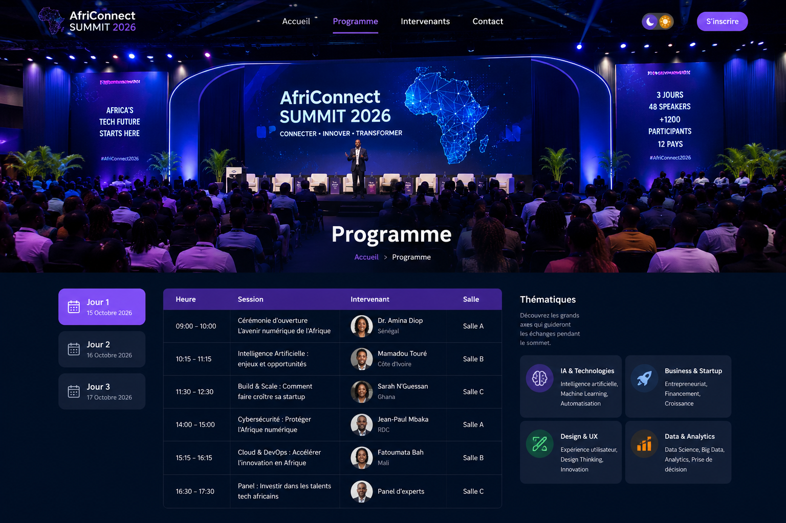

Dates
14 au 16 Novembre 2026
Découvrez l'ensemble des conférences, ateliers, démonstrations, compétitions et activités prévues pendant AfriConnect Summit 2026.

Le sommet se déroule sur trois jours et alterne conférences, ateliers pratiques, démonstrations technologiques, networking et concours.
14 au 16 Novembre 2026
09h00 à 18h30
Centre International de Conférences de Dakar
Plus de 1200 participants attendus.
| Heure | Activité | Intervenant | Lieu |
|---|---|---|---|
| 08h00 | Accueil des participants | Comité d'organisation | Hall principal |
| 09h00 | Cérémonie officielle d'ouverture | Direction AfriConnect | Auditorium |
| 10h00 | L'avenir du numérique en Afrique | Mariam Diallo | Auditorium |
| 11h00 | Pause café & Networking | - | Espace détente |
| 11h30 | Introduction à l'Intelligence Artificielle | David Mensah | Salle A |
| 12h30 | Pause déjeuner | - | Restaurant |
| 14h00 | Créer une startup technologique | Patrick N'Guessan | Salle B |
| 15h00 | Cybersécurité : bonnes pratiques | Samuel Kouassi | Salle C |
| 16h15 | Pause | - | Hall principal |
| 16h45 | Table ronde : Les métiers du numérique | Tous les intervenants | Auditorium |
| 18h00 | Clôture de la première journée | Organisation | Auditorium |
Les ateliers sont animés par des professionnels expérimentés. Ils permettent aux participants de pratiquer directement les notions abordées pendant les conférences.
Création d'un site web responsive en HTML, CSS et JavaScript.
Durée : 2 heuresDécouverte des modèles d'intelligence artificielle et réalisation de petits projets.
Durée : 2 heuresSensibilisation aux attaques informatiques et aux bonnes pratiques de sécurité.
Durée : 1 h 30Introduction à la création d'applications Android et iOS.
Durée : 2 heures| Heure | Activité | Intervenant | Lieu |
|---|---|---|---|
| 09h00 | Accueil des participants | Organisation | Hall principal |
| 09h30 | Le Cloud Computing en Afrique | Grace Okafor | Salle A |
| 10h30 | Développement Mobile Moderne | Jean Bosco Mugenzi | Salle B |
| 11h30 | Pause Café | - | Espace détente |
| 12h00 | UX/UI Design : créer de meilleures interfaces | Amina Ben Ali | Salle C |
| 13h00 | Pause déjeuner | - | Restaurant |
| 14h30 | Blockchain et innovation financière | Aïcha Traoré | Salle A |
| 15h30 | DevOps et automatisation | Mohamed Ben Salah | Salle B |
| 16h30 | Pause Networking | - | Village Expo |
| 17h00 | Conférence : Les métiers du futur | Linda Kabwe | Auditorium |
| 18h00 | Fin des conférences | Organisation | Auditorium |
Pendant toute la durée du sommet, plusieurs startups africaines présenteront leurs solutions numériques aux visiteurs.
Solutions de paiement, banque numérique et inclusion financière.
Applications médicales, télémédecine et intelligence artificielle.
Plateformes d'apprentissage et solutions éducatives innovantes.
Technologies favorisant le développement durable et la transition écologique.
| Heure | Activité | Intervenant | Lieu |
|---|---|---|---|
| 09h00 | Accueil des participants | Organisation | Hall principal |
| 09h30 | Data Science et analyse de données | Nadia El Idrissi | Salle A |
| 10h30 | Les réseaux informatiques modernes | Eric Ndayishimiye | Salle B |
| 11h30 | Pause café | - | Espace détente |
| 12h00 | Table ronde : Innovation en Afrique | Tous les intervenants | Auditorium |
| 13h00 | Pause déjeuner | - | Restaurant |
| 14h30 | Présentation des meilleurs projets étudiants | Jury | Auditorium |
| 15h30 | Remise des récompenses | Organisation | Grande scène |
| 16h30 | Photo officielle des participants | - | Parvis principal |
| 17h00 | Cérémonie de clôture | Direction AfriConnect | Auditorium |
| 18h00 | Cocktail de clôture | - | Jardin central |
Afin de faciliter les déplacements des visiteurs, plusieurs espaces sont aménagés selon les activités proposées durant les trois journées.
Grandes conférences, cérémonies officielles et tables rondes.
Intelligence artificielle, Cloud Computing et Data Science.
Développement Web, Mobile et DevOps.
Cybersécurité, Réseaux et Blockchain.
Stands des entreprises, startups et partenaires.
Networking, pauses café et rencontres informelles.
Des experts internationaux partageront leurs expériences dans différents domaines.
Des formations pratiques pour développer vos compétences techniques.
Rencontrez étudiants, développeurs, entreprises et investisseurs.
Plusieurs compétitions récompenseront les meilleurs projets numériques.
Oui. Les places étant limitées, une inscription préalable est recommandée.
Certaines conférences seront enregistrées puis mises à disposition après l'événement.
Oui. Plusieurs formules d'inscription sont proposées.
Une attestation officielle sera remise aux participants ayant assisté aux différentes activités.
Ne manquez pas cette opportunité d'apprendre, d'échanger et de développer votre réseau professionnel.